Case Study — Seedance 2 · Nano Banana Pro · Midjourney
How I made Dust Born
A deep dive into testing Seedance 2 to its limits — continuous long shots, speed ramping, orbiting cameras, transformations, and everything I broke along the way.
DifficultyHardRuntime~15 min readToolsMidjourney · Nano Banana Pro · Seedance 2Last testedApril 2026
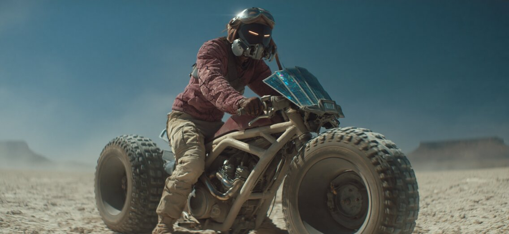
The image that started everything — Midjourney 8.1
01 — Inspiration
It started in the Midjourney gallery
I got inspired by an image in the Midjourney gallery, so I created the main image for the look and feel of the scene, then built a short story around it to test Seedance 2 to its limits.
I wanted to test continuous long shots with speed ramping and slow motion, the camera orbiting and moving around the space where the main action was happening, and a few cool transformations on top. All of that in one tool, in one story.
The Midjourney hero shot
I used Midjourney 8.1. Here is the exact prompt I used for the image at the top of this page.
Midjourney 8.1 · Hero shot
Cinematic live-action photograph, full-length shot of a wiry figure in a cracked dust-red riding jacket over desert-tan cargo trousers, wearing a sleek matte-black robotic mask with glowing amber visor slits and exposed mechanical jaw plating, aviator helmet strapped over the top, straddling a prototype motorcycle with enormous knobby oversized wheels, an exposed tubular chassis, and a crown of iridescent blue solar panels fanned above the engine bay, cracked salt-flat desert under hard midday sun, deep cobalt sky, distant mesas shimmering in heat haze, swirling dust particles catching the light, hazy atmospheric backlight, volumetric god rays, shot on ARRI Alexa 65 with Panavision Ultra Vista anamorphic 50mm lens, shallow depth of field, subtle lens flare, fine 35mm film grain, saturated earthy color grade --ar 7:3 --profile uh44zyu qu8xvwd --hd --v 8.1
Upscaling inside Higgsfield (Nano Banana Pro 2K)
I took the same image into Higgsfield and used Nano Banana Pro at 2K to push the quality, break up the jacket, and lock the rider's pose.
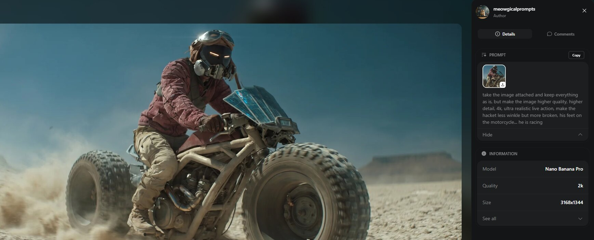
Nano Banana Pro 2K upscale — shown inside the Higgsfield interface
Nano Banana Pro · Upscale
take the image attached and keep everything as is, but make the image higher quality, higher detail, 4k, ultra realistic live action, make the jacket less wrinkled but more broken, his feet on the motorcycle… he is racing
02 — Pre-production
Building the asset bible
Before generating a single second of video, I went through the script and made a list of every character, every element, every location. Claude helped me organize it cleanly.
The rule: every character gets a close-up and a full shot on a white background. That way I can feed consistent references into Seedance later and the character won't drift between scenes.
The Rider
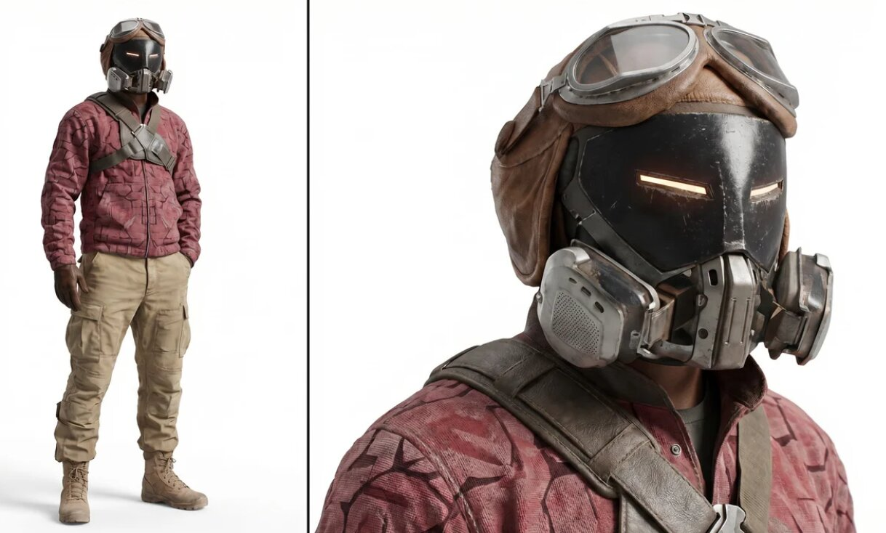
Character sheet — full shot + close-up, white background for reference consistency
Nano Banana Pro · Rider character sheet
take the image attached and focus on the main character in the center, take the same character with the same clothing and do a close up of him on the right and a full shot on the left, with relax expression and pose, for character consistency, white background, hyper realistic textures
The Mud Monster
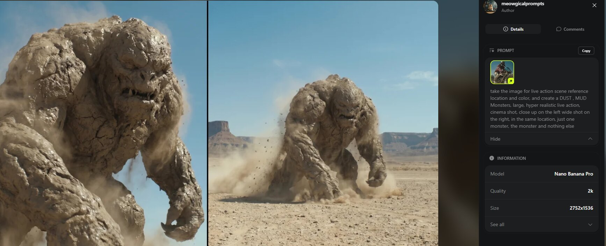
The Mud Monster (later renamed the Earth Giant / Dust Colossus)
Nano Banana Pro · Mud Monster
take the image for live action scene reference location and color, and create a DUST , MUD Monsters, large, hyper realistic live action, cinema shot, close up on the left wide shot on the right, in the same location, just one monster, the monster and nothing else
The Transformer
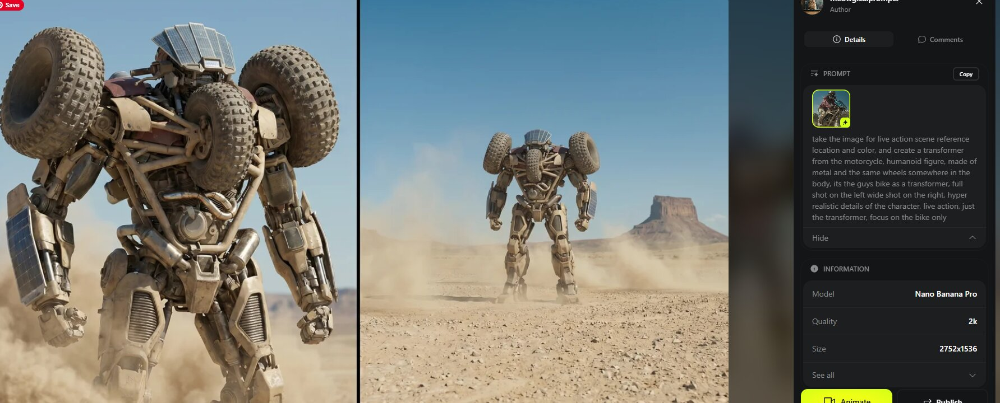
The Transformer — the rider's bike in combat form
Nano Banana Pro · Transformer
take the image for live action scene reference location and color, and create a transformer from the motorcycle, humanoid figure, made of metal and the same wheels somewhere in the body, its the guys bike as a transformer, full shot on the left wide shot on the right, hyper realistic details of the character, live action, just the transformer, focus on the bike only
The Bike (solo shot)
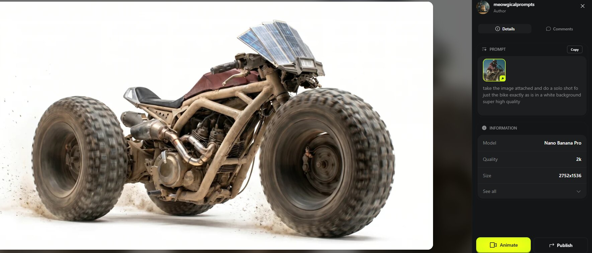
Clean bike plate for reference — white background, high quality
Nano Banana Pro · Bike
take the image attached and do a solo shot of just the bike exactly as is in a white background super high quality
03 — The script
Writing for Dreamina's limits
Dreamina has restrictions: no human faces, limits on violence. So I wrote the script around those limits, not against them.
That's actually why the Rider wears a full mask the entire film. And why the "fight" is between the Mech and the Mud Figure — not between the Rider and anyone. Working with the rules made the story tighter, not weaker.
Once the script was locked, I broke down every character, location, and key element — white background full shot + close-up for each — then fed them into Seedance as image references, one by one.
04 — Seedance 2 · The scenes
Here's where the testing happened
These are my final working prompts for Seedance 2 inside Dreamina. Every one of them was tested, iterated, and re-run until it hit. Copy any of them — the structure is the real lesson.
Scene 1 · Prompt 1 · 15 seconds
The ride, the earthquake, the emergence
Man riding the moto until the earth shakes and the Mud Monster comes out.
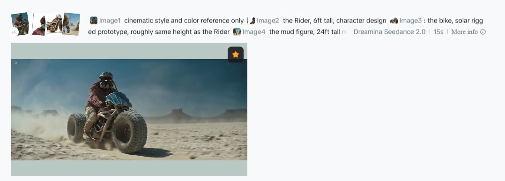
Opening shot inside Dreamina — Seedance 2.0 · 15s
Seedance 2 · Scene 1
@image1 cinematic style and color reference only
@image2 the Rider, 6ft tall, character design
@image 3: the bike, solar rigged prototype, roughly same height as the Rider
@image 4 the mud figure, 24ft tall made of dried mud, roughly four times the height of the Rider
CAST
Only two characters in this scene: the Rider and the mud figure. Plus the bike. No others.
SIZE AND SCALE
The Rider stands 6ft tall. The mud figure stands 24ft tall, exactly four times the Rider's height. In every frame where both are visible, the mud figure must appear four times as tall as the Rider. Bike is roughly the same height as the Rider.
STYLE
Cinematic live action, photoreal, anamorphic 18mm wide lens, shallow DOF, 35mm grain, saturated earthy grade, Villeneuve feel. Color: warm. Master cinema quality.
Salt flat desert. Midday sun, cobalt sky, heat haze on distant mesas, swirling dust.
CHARACTERS
@image2: wardrobe as reference, amber visor slits glowing. Focused, alert, steady.
@image3: 24ft tall, four times the Rider's height, large, heavy, slow moving. Begins emerging from the earth directly in front of the Rider, in his line of sight as he rides. Fully rises, brings both hands down onto the ground, stands to full 24ft height.
CONTEXT
The Rider rides across the salt flats. Directly ahead of him the ground begins to shake and break open. The mud figure is rising from the earth in his path. He brakes hard because of what is emerging in front of him. He dismounts, bike stays beside him. The mud figure fully emerges, brings both hands down onto the salt crust, then stands to full 24ft height.
ACTION
0s to 6s RIDING: The Rider rides at full speed on the bike. Heavy dust plume trailing. Amber visor slits fixed ahead. Camera follows from far to close.
6s to 9s HARD STOP: He brakes hard. Bike decelerates and comes to a full stop. Dust plume collapses around him. Directly in front of him the ground is already shaking. The mud figure is beginning to break through the salt crust, head and shoulders breaching, in his line of sight.
9s to 15s EMERGENCE: The Rider dismounts. The bike stays beside him. The mud figure continues rising from the earth in front of him, pulling his full body free. He leans forward and brings both massive hands down onto the salt crust. Dust bursts outward. He then rises to full 24ft height, four times the Rider's height, towering over him. Ends on the master cinema composition: Rider and bike small in foreground, mud figure towering in background directly in front of them.
CAMERA
Single unbroken continuous shot. No cuts. 18mm anamorphic wide lens throughout. Camera moves smoothly and cinematically the entire 15 seconds, always following the best action, never static.
The camera opens far away and wide, the Rider and bike small moving across the flats at speed. Over the first 6 seconds the camera gradually closes the distance, tracking alongside him and getting progressively closer, ending in a medium framing as he slows. As he brakes hard, the camera decelerates with him and arcs smoothly around to his side, revealing the ground directly in front of him already shaking and the mud figure starting to breach in his path. The bike settles to a stop. The Rider dismounts, bike stays beside him. Without stopping, the camera pushes past the Rider toward the emerging mud figure ahead of him, craning up dynamically to capture the full rise. As he brings his hands down onto the salt crust, the camera catches the impact from a low angle. As he stands to full 24ft height, the camera pulls back into a master cinema wide frame, Rider and bike small in foreground, mud figure towering four times as tall directly in front of them. Hold on the final composition.
SPEED RAMPING
Real time through the ride. Ramps to slow motion on the hard brake and as the ground begins shaking. Holds slow motion through the dismount and the mud figure's emergence. Real time on the hand impact for weight. Slow motion on the final rise, holding on the master shot.
AUDIO
No music. SFX only
Additional Prompt · Story beat 01 · 4 seconds
"Well. You seem angry."
A tight frontal close-up on the Rider's masked face. One dry, sarcastic line.
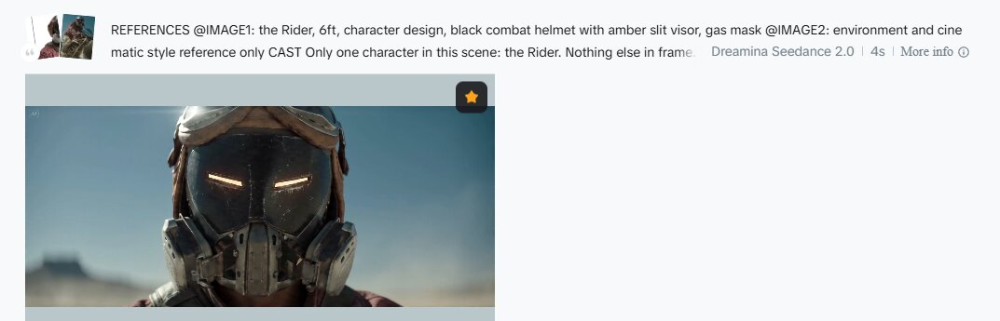
Tight close-up · Seedance 2.0 · 4s
Seedance 2 · Rider close-up
REFERENCES
@IMAGE1: the Rider, 6ft, character design, black combat helmet with amber slit visor, gas mask
@IMAGE2: environment and cinematic style reference only
CAST
Only one character in this scene: the Rider. Nothing else in frame.
STYLE
Cinematic live action, photoreal, anamorphic 18mm wide lens, shallow DOF, 35mm grain, saturated earthy grade, Villeneuve feel. Color: warm. Style and cinema feel as @IMAGE2.
ENVIRONMENT
Salt flat desert as @IMAGE2. Midday sun, cobalt sky, heat haze, swirling dust.
CHARACTERS
@IMAGE1: wardrobe as reference, amber visor slits glowing. Calm, dry, sarcastic.
CONTEXT
A tight frontal close up on the Rider's masked face as he delivers a single sarcastic line. The mask stays on throughout, voice comes through the gas mask filter.
ACTION
0s to 4s: The Rider stands facing camera directly in a tight close up, head and upper shoulders filling the frame. He delivers the line in a dry sarcastic tone, voice muffled slightly through the gas mask. His head tilts very slightly on the delivery, visor slits glowing steady.
VOICEOVER
Rider, spoken dry and sarcastic, slightly muffled through the gas mask: "Well. You seem angry."
CAMERA
Single unbroken continuous shot. No cuts. 18mm anamorphic wide lens throughout.
Opens on a frontal close up of the Rider's masked face, head centered. The camera slowly pushes in toward his head over the full 4 seconds, smoothly and steadily, tightening on the mask and the glowing amber visor slits. The 18mm wide lens exaggerates the curvature of the mask and helmet as the camera closes in. Ends very tight on the mask, visor slits filling frame.
SPEED RAMPING
Real time throughout.
PHYSICS
Rider stands steady with trained stillness. Dust drifts past his face in the wind. Camera moves smoothly, no bounce.
AUDIO
No music. SFX only: wind across the flats, faint filtered breath through the gas mask. The Rider's sarcastic line plays over this ambient audio.
Scene 2 · Prompt 2 · 8 seconds
The transformation
The bike transforms — Transformers style — while the Rider watches.
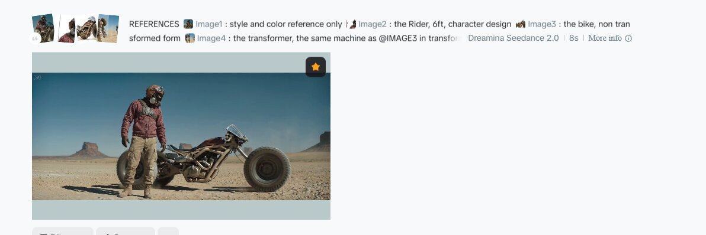
Opening frame of the transformation scene · Seedance 2.0 · 8s
Seedance 2 · Transformation
REFERENCES
@image1: style and color reference only
@image 2: the Rider, 6ft, character design
@image 3: the bike, non transformed form
@image 4: the transformer, the same machine as @IMAGE3 in transformed form, 12ft bipedal battle robot
CAST
Only one character: the Rider. Plus one machine that is @IMAGE3 at the start and becomes @IMAGE4 by the end. @IMAGE3 and @IMAGE4 are the same machine in two forms, not two objects. Never a second bike, never a second transformer, no duplicates.
STYLE
Cinematic live action, photoreal, anamorphic 18mm wide lens, shallow DOF, 35mm grain, saturated earthy grade, Villeneuve feel. Color: warm.
ENVIRONMENT
Salt flat desert. Midday sun, cobalt sky, heat haze, swirling dust.
CHARACTERS
@IMAGE2: wardrobe as reference, amber visor slits glowing. Calm, focused, watching.
CONTEXT
The Rider stands beside the bike, facing camera. He looks over at the bike, and it begins transforming on its own. The camera moves around the transformation smoothly as it unfolds Transformers style. When it completes, the transformer stands next to the Rider, both facing forward frontal.
ACTION
0s to 2s: The Rider stands centered in frontal view, bike directly to his right. He turns his head slightly to look at the bike. The bike begins the transformation.
2s to 7s: The machine transforms Transformers style from @IMAGE3 into @IMAGE4. Panels unfold in sequence. Wheels pivot downward and plant as feet. Chassis telescopes upward. Solar panels fan open across the back. Amber running lights ignite one by one. Every fold is mechanical and punctuated. The Rider stays still, head tracking the transformation, watching the entire process.
7s to 8s: Transformation completes. The transformer stands fully formed directly next to the Rider. Both face camera frontal. Final frame: Rider on the left, transformer on the right, both looking forward.
CAMERA
Single unbroken continuous shot. No cuts. 18mm anamorphic wide lens throughout. Camera moves smoothly the entire 8 seconds, never static.
Opens frontal on the Rider with the bike directly to his right in the same wide frame. As the Rider turns his head to look at the bike, the camera begins a smooth slow arc from frontal position around the scene toward the bike side. As the transformation begins, the camera enters a slow orbit around the single machine as it reshapes, moving low and high to capture each stage of the unfolding. The Rider remains in the foreground throughout, head tracking the transformation. The orbit completes around the machine as it finishes transforming. The camera then smoothly returns to a frontal wide position, reframing on the Rider and the transformer standing side by side. Hold on the final frontal two shot, both facing forward. Nothing else in frame.
SPEED RAMPING
Real time on the opening frontal. Ramps to slow motion as the Rider looks at the bike and the transformation begins. Deep slow motion through the full transformation orbit, each fold punctuated. Ramps toward real time as the transformer plants beside the Rider. Holds steady on the final frontal.
PHYSICS
Rider stands with real weight. Transformation is smooth and mechanical, one bike becomes one transformer, nothing duplicates. Each panel fold has resistance and mass. Hydraulic joints. Transformer footfalls compress salt crust when it plants. Nothing floaty.
AUDIO
No music. SFX only: wind across the flats, mechanical cascade of servo whines, panel lock clacks, pneumatic hiss on joint extensions, each fold sequential, low electrical hum as amber lights ignite, heavy transformer footfall as it plants, quiet wind on final frame.
Additional Prompt · Story beat 02 · 5 seconds
Mud figure · close-up tracking shot
Camera locked to the giant as he rumbles and advances. Motion read through the background streaking past.
REFERENCES
@image1: style and scene reference, salt flat desert
@image2: the mud figure, 18ft tall made of dried mud, character reference
CAST
Only one character in this scene: the mud figure. Nothing else in frame except the desert behind him.
STYLE
Cinematic live action, photoreal, anamorphic 16mm wide lens, shallow DOF, 35mm grain, saturated earthy grade, Villeneuve feel. Color: warm.
ENVIRONMENT
Salt flat desert as @IMAGE1. Midday sun, cobalt sky, heat haze, swirling dust.
CHARACTERS
@IMAGE2: large, heavy, slow moving. Lets out a deep low rumble, then begins moving forward with steady weight.
CONTEXT
A tight frontal close up on the mud figure's head and upper chest, 16mm wide lens exaggerating scale and presence. The camera is locked to the figure, staying in the same frame position as he moves forward. Movement reads through his body language and the desert streaking behind him.
ACTION
0s to 2s: The mud figure stands centered in a tight frontal close up, head and upper chest filling frame. His chest expands and he lets out a deep low rumble. Dust drifts off his shoulders.
2s to 5s: He begins moving forward with steady heavy weight. Head shifts forward, shoulders rolling with each stride, dried mud surface flexing and cracking with motion. We read his forward motion through his body and through the desert background streaking past behind him, dust trailing in the air.
CAMERA
Single unbroken continuous shot. No cuts. 16mm anamorphic wide lens throughout.
The camera is locked in a tight frontal close up on the mud figure's head and upper chest, framed low looking slightly up so he rises into the top of frame. The 16mm wide lens exaggerates scale and the curvature around his head. As he rumbles and begins moving, the camera stays locked to him, maintaining the exact same frame composition the entire 5 seconds. He does not move closer or farther in frame. Forward motion is read through body language, through the desert streaking past behind him, and through dust and mud debris trailing in the air around him. Hold tight on his face throughout.
SPEED RAMPING
Real time on the rumble. Optional subtle slow motion dip at 1 to 2 seconds on his expression, smoothly returning to real time as he moves forward.
PHYSICS
Real heavy weight. Head and shoulders move with mass, dried mud surface flexing and cracking with motion. Dust falls off his shoulders continuously. Desert background streaks past to show forward motion. Camera perfectly locked to the figure, zero drift, zero bounce.
AUDIO
No music. SFX only: deep low rumble from the figure, heavy footfalls compressing salt, dried mud cracking with motion, wind across his face and body, dust shifting.
Scene 3 · The Fight · 15 seconds
Mech vs. Dust Colossus
The centerpiece. Handheld weaving, orbital cameras, speed ramps, shockwaves. Everything tested at once.
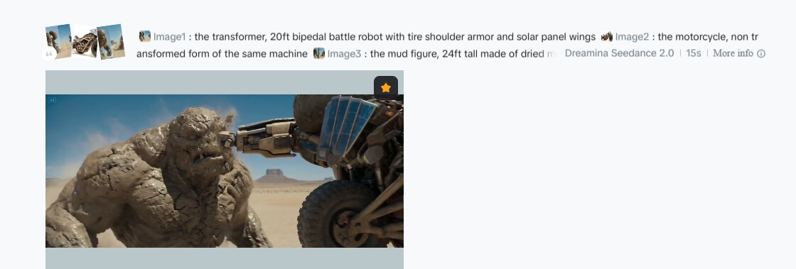
The fight · Seedance 2.0 · 15s
Seedance 2 · The Fight
@IMAGE1 = Visual style and tone reference for the scene only
@IMAGE2 = The Rider, black combat helmet with amber slit visor, gas mask, burgundy textured jacket, chest harness, cargo pants, tan boots
@IMAGE3 = The Dust Colossus, 18-foot dried-mud ancient-warrior earth creature, hollow eye sockets, gorilla-mass silhouette
@IMAGE4 = The Mech, desert-tan bipedal battle robot, four off-road tires as shoulder armor, solar panel wings, amber running lights along the chassis
ART STYLE
Cinematic live action. Photorealistic, 35mm wide-format, desert epic scale. Heat haze, natural dust atmosphere, prestige action film quality. Color temperature warm.
ENVIRONMENT
Open salt flat desert at midday. Combat zone, cracked salt crust, dust clouds drifting from earlier impacts.
CHARACTERS IN SCENE
Exactly three characters in the entire scene, no more. The Rider from @IMAGE2, standing on his feet with no bike beneath him, no vehicle near him, his hands empty. The Mech from @IMAGE4, the only machine in the scene. The Colossus from @IMAGE3. There is no bike anywhere in this shot. The Rider never sits on anything. No second Mech, no duplicates.
CONTEXT
The giant and the Mech trade strikes. Neither is winning. The fight escalates into a locked mid-combat beat.
SINGLE CONTINUOUS SHOT, NO CUTS, 15 SECONDS
The shot opens low and handheld, weaving in real-time between the two combatants as the Colossus from @IMAGE3 lunges forward with a heavy overhead swing. The Mech from @IMAGE4 ducks low under the arm, dust spraying off its shoulders, and counters with a quick edged jab to the Colossus midsection. Chunks of dried mud crack loose and fall.
The camera whips around behind the Mech as the Colossus swings back with a brutal backhand. The Mech weaves low, boots sliding across the salt crust, then rises fast with a sharp elbow strike. Speed ramps hard into super slow motion on the elbow impact. A section of mud shoulder fractures and hangs suspended in the air before speed ramps back to real-time.
The Colossus roars and drives both fists downward. The Mech leaps sideways, the camera tracking in a fast orbit around the action. The fists slam the salt crust where the Mech was standing, shockwave rippling outward, dust exploding upward around the camera.
The Mech lands in a low crouch and immediately launches forward into a running strike. The camera tracks with it in real-time as it drives a shoulder into the Colossus torso. Mud fractures and the Colossus staggers back one heavy step.
They circle each other in a tight orbit, the camera sweeping wide around both of them. The Colossus recovers fast, rearing up to its full height, and winds up a massive two-handed downward blow. The Mech drops into a low stance, blades not yet extended, raising its arms to meet the strike.
Speed ramps hard into deep super slow motion for the final beat. The camera arcs around the locked moment, finding the Rider from @IMAGE2 in the foreground, standing firmly on his own two feet with nothing beneath him and no vehicle anywhere near him, watching the fight. The Colossus fists come down, the Mech rises to counter, both caught mid-action. Hold on the unresolved exchange.
LIGHTING
Harsh midday desert sun, high and direct, heavy directional shadows carving the combatants against the ground.
PHYSICS
Every strike has weight. The Mech moves fast and light but its footfalls compress the salt crust. The Colossus moves with tectonic mass, each swing displacing air and dust. Mud chunks fracture and fall with real gravity, never floating. Both fighters stay on their feet throughout, no knockdowns. The Rider is on foot, standing, never seated or mounted on anything.
AUDIO
No music. Sound effects only. Heavy Colossus grunts and earth-deep roars. Mech servo whines and metallic impacts on every strike. Mud cracking and chunks hitting the salt crust. Sub-bass slam on ground impacts. Whoosh of air around every heavy swing. Slow-motion bed drops low and muted on the final frozen beat.
There are several more Seedance scenes in the full project — the Earth Giant charge, the transformation mid-charge, the Mech getting thrown, and the freeze-blast ending — each with its own prompt structure following the same cast / size / style / context / action / camera / speed ramping / physics / audio blocks. I'll add those to the final version.
05 — What I struggled with
Things I learned the hard way
These are the mistakes I made, the patterns I kept running into, and the specific fixes that saved me time on the next scene.
Lesson 01 · Cast
Seedance sometimes duplicates characters
Even with reference images locked in, Seedance will sometimes render the same character twice in the same scene — two Mechs, two bikes, duplicates you never asked for.
Add a short CAST block at the top of every prompt. State exactly how many characters are in the scene and who they are. "Only two characters: the Rider and the mud figure. No others."
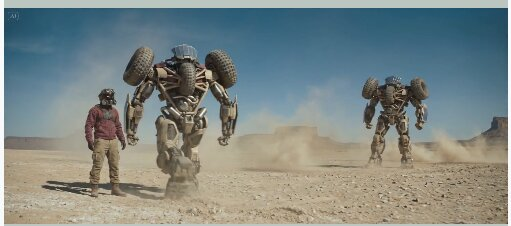
Duplicate characters error — fixed by adding an explicit CAST block
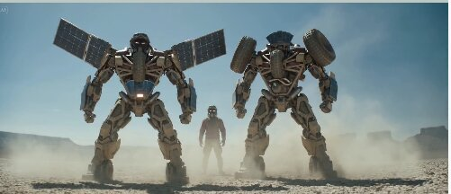
Another duplication — same fix
Lesson 02 · Direction
Characters don't always face each other
In a lot of test takes, characters ended up facing completely wrong directions — the Rider with his back to the monster, the Mech facing away from the fight, etc. Seedance won't figure out direction from context alone.
Be explicit: "X is facing Y", "Rider's back is to the camera", "Mech turns to face the Colossus head-on." State the direction of every character in every beat.
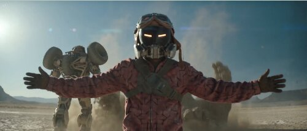
Characters not facing each other · fix: explicit direction in the prompt
Lesson 03 · Scale
Proportions are still hard
Size and proportion between characters is the one I still haven't fully solved. The mud figure is supposed to be 4× the Rider's height but sometimes renders as only slightly taller.
Start adding short size statements in the prompt: "Mud monster and Transformer are about the same size. Transformer is three times larger than the human." An untested but promising next step: generate a single Nano Banana Pro image showing all characters lined up side-by-side at correct scale, then feed that as a dedicated size-reference image into Seedance with a note in the prompt that this image is for scale reference only.
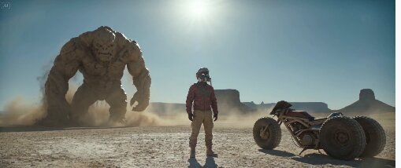
Scale inconsistency · 24ft mud figure rendering closer to 8ft
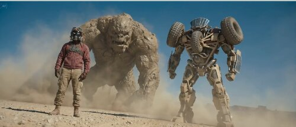
Same trio, better scale balance — still not the 4× ratio prompted
Lesson 04 · Hero shot
Lock your look with specific cinematography
Adding a few details on camera, lens, and overall look makes every scene feel like it belongs to the same film. Color consistency especially.
Pick your lens and stick to it. For this project I chose 18mm anamorphic wide for every scene, with occasional close-ups. I love the Revenant's cinematography — anamorphic wide with close-ups — so that became the visual rule for the whole short.
Lesson 05 · Working with Claude
How you describe a shot determines what you get
The way you talk through a scene with Claude is one of the most important skills I learned. Close your eyes, imagine the shot, then describe it in order. I now use this structure every time:
Action — write exactly what happens in the scene
Timing — 3 seconds for this, 4 seconds for that
Composition — how does the frame start, how does it end? Frontal? POV?
Camera movement — continuous? "No cuts"? Handheld? Smooth? Orbiting?
Lens and DOP — lens choice, depth of field, grain, color grade
Lesson 06 · Iteration
The best takes came from testing, not planning
A lot of "bad takes" had 2-3 seconds that were perfect. Those went into the edit. The fight scene especially — the best cuts weren't the ones I planned, they were the ones I found in the throwaways. Every pass also taught Claude something, and the Seedance skill kept improving with every scene.
06 — Final notes
What you're really paying attention to
A few takes needed rewording to fit Dreamina's non-violence policy. Sometimes a bad take had a few perfect seconds that went straight into the edit. The fight was the hardest scene — and the most rewarding when it finally clicked.
If you use any of these prompts, they're yours. Tear them apart, remix them, break them. The goal was never to hand you prompts — it was to show you the shape of a prompt that actually works, and why.